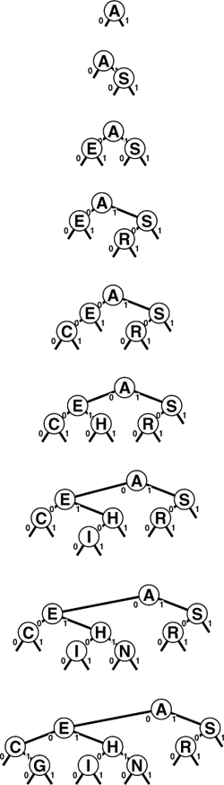

C++ Programming Robert Sedgewick - Princeton University Addison Wesley Professional Algorithms in C++, Parts 1–4: Fundamentals, Data Structure, Sorting, Searching, Third Edition
15.1. Digital Search Trees
The simplest radix-search method is based on use of digital search trees (DSTs). The search and insert algorithms are identical to binary tree search except for one difference: We branch in the tree not according to the result of the comparison between the full keys, but rather according to selected bits of the key. At the first level, the leading bit is used; at the second level, the second leading bit is used; and so on, until an external node is encountered. Program 15.1 is an implementation of search; the implementation of insert is similar. Rather than using < to compare keys, we assume that the digit function is available to access individual bits in keys. This code is virtually the same as the code for binary tree search (see Program 12.8), but has substantially different performance characteristics, as we shall see.
We saw in Chapter 10 that we need to pay particular attention to equal keys in radix sorting; the same is true in radix search. Generally, we assume in this chapter that all the key values to appear in the symbol table are distinct. We can do so without loss of generality because we can use one of the methods discussed in Section 12.1 to support applications that have records with duplicate keys. It is important to focus on distinct key values in radix search, because key values are intrinsic components of several of the data structures that we shall consider.
Program 15.1. Binary digital search tree|
To develop a symbol-table implementation using DSTs, we modify the implementations of search and insert in the standard BST implementation (see Program 12.8) as shown in this implementation of search. Rather than doing a full key comparison, we decide whether to move left or right on the basis of testing a single bit (the leading bit) of the key. The recursive function calls have a third argument so that we can move the bit position to be tested to the right as we move down the tree. We use the digit operation to test bits, as discussed in Section 10.1. These same changes apply to implementation of insert; otherwise, we use all the code from Program 12.8.
private:
Item searchR(link h, Key v, int d)
{ if (h == 0) return nullItem;
if (v == h->item.key()) return h->item;
if (digit(v, d) == 0)
return searchR(h->l, v, d+1);
else return searchR(h->r, v, d+1);
}
public:
Item search(Key v)
{ return searchR(head, v, 0); }
|
Figure 15.1 gives binary representations for the one-letter keys used in other figures in the chapter. Figure 15.2 gives an example of insertion into a DST; Figure 15.3 shows the process of inserting keys into an initially empty tree.
As we did in Chapter 10, we use the 5-bit binary representation of i to represent the ith letter in the alphabet, as shown here for several sample keys, for the small examples in the figures in this chapter. We consider the bits as numbered from 0 to 4, from left to right.
In an unsuccessful search for M = 01101 in this sample digital search tree (top), we move left at the root (since the first bit in the binary representation of the key is 0) then right (since the second bit is 1), then right, then left, to finish at the null left link below N. To insert M (bottom), we replace the null link where the search ended with a link to the new node, just as we do with BST insertion.
This sequence depicts the result of inserting the keys A S E R C H I N G into an initially empty digital search tree.

The bits of the keys control search and insertion, but note that DSTs do not have the ordering property that characterizes BSTs. That is, it isnot necessarily the case that nodes to the left of a given node have smaller keys or that nodes to the right have larger keys, as would be the case in a BST with distinct keys. It is true that keys on the left of a given node are smaller than keys on the right—if the node is at level k, they all agree in the first k bits, but the next bit is 0 for the keys on the left and is 1 for the keys on the right—but the node's key could itself could be the smallest, largest, or any value in between of all the keys in that node's subtree.
DSTs are characterized by the property that each key is somewhere along the path specified by the bits of the key (in order from left to right). This property is sufficient for the search and insert implementations in Program 15.1 to operate properly.
Suppose that the keys are words of a fixed length, all consisting of w bits. Our requirement that keys are distinct implies that N  2w, and we normally assume that N is significantly smaller than 2w, since otherwise key-indexed search (see Section 12.2) would be the appropriate algorithm to use. Many practical problems fall within this range. For example, DSTs are appropriate for a symbol table containing up to 105 records with 32-bit keys (but perhaps not as many as 106 records), or for any number of 64-bit keys. Digital tree search also works for variable-length keys; we defer considering that case in detail to Section 15.2, where we consider a number of other alternatives as well. 2w, and we normally assume that N is significantly smaller than 2w, since otherwise key-indexed search (see Section 12.2) would be the appropriate algorithm to use. Many practical problems fall within this range. For example, DSTs are appropriate for a symbol table containing up to 105 records with 32-bit keys (but perhaps not as many as 106 records), or for any number of 64-bit keys. Digital tree search also works for variable-length keys; we defer considering that case in detail to Section 15.2, where we consider a number of other alternatives as well.
The worst case for trees built with digital search is much better than that for binary search trees, if the number of keys is large and the key lengths are small relative to the number of keys. The length of the longest path in a digital search tree is likely to be relatively small for many applications (for example, if the keys comprise random bits). In particular, the longest path is certainly limited by the length of the longest key; moreover, if the keys are of a fixed length, then the search time is limited by the length. Figure 15.4 illustrates this fact.
This sequence depicts the result of inserting the keys P = 10000, H = 01000, D = 00100, B = 00010, and A = 00001 into an initially empty digital search tree. The sequence of trees appears degenerate, but the path length is limited by the length of the binary representation of the keys. Except for 00000, no other 5-bit key will increase the height of the tree any further.
Property 15.1. A search or insertion in a digital search tree requires about lg N comparisons on the average, and about 2 lg N comparisons in the worst case, in a tree built from N random keys. The number of comparisons is never more than the number of bits in the search key|
We can establish the stated average-case and worst-case results for random keys with an argument similar to one given for a more natural problem in the next section, so we leave this proof for an exercise there (see Exercise 15.30). It is based on the simple intuitive notion that the unseen portion of a random key should be equally likely to begin with a 0 bit as a 1 bit, so half should fall on either side of any node. Each time that we move down the tree, we use up a key bit, so no search in a digital search tree can require more comparisons than there are bits in the search key. For the typical condition where we have w-bit words and the number of keys N is far smaller than the total possible number of keys 2w, the path lengths are close to lg N, so the number of comparisons is far smaller than the number of bits in the keys for random keys.
|
Figure 15.5 shows a large digital search tree made from random 7-bit keys. This tree is nearly perfectly balanced. DSTs are attractive in many practical applications because they provide near-optimal performance even for huge problems, with little implementation effort. For example, a digital search tree built from 32-bit keys (or four 8-bit characters) is guaranteed to require fewer than 32 comparisons, and a digital search tree built from 64-bit keys (or eight 8-bit characters) is guaranteed to require fewer than 64 comparisons, even if there are billions of keys. For large N, these guarantees are comparable to the guarantee provided by red–black trees, but are achieved with about the same implementation effort as is required for standard BSTs (which can promise only guaranteed performance proportional to N2). This feature makes the use of digital search trees an attractive alternative to use of balanced trees in practice for implementing the search and insert symbol-table functions, provided that efficient access to key bits is available.
This digital search tree, built by insertion of about 200 random keys, is as well-balanced as its counterparts in Chapter 15.

Exercises |  15.1 Draw the DST that results when you insert items with the keys E A S Y Q U T I O N in that order into an initially empty tree, using the binary encoding given in Figure 15.1. 15.1 Draw the DST that results when you insert items with the keys E A S Y Q U T I O N in that order into an initially empty tree, using the binary encoding given in Figure 15.1.
| | 15.2 Give an insertion sequence for the keys A B C D E F G that results in a perfectly balanced DST that is also a valid BST. | | 15.3 Give an insertion sequence for the keys A B C D E F G that results in a perfectly balanced DST with the property that every node has a key smaller than those of all the nodes in its subtree. | | 15.4 Draw the DST that results when you insert items with the keys 01010011 00000111 00100001 01010001 11101100 00100001 10010101 01001010 in that order into an initially empty tree. | | 15.5 Can we keep records with duplicate keys in DSTs, in the same way that we can in BSTs? Explain your answer. | | | | 15.6 Run empirical studies to compare the height and internal path length of a DST built by insertion of N random 32-bit keys into an initially empty tree with the same measures of a standard binary search tree and a red–black tree (Chapter 13) built from the same keys, for N = 103, 104, 105, and 106. | |  15.7 Give a full characterization of the worst-case internal path length of a DST with N distinct w-bit keys. 15.7 Give a full characterization of the worst-case internal path length of a DST with N distinct w-bit keys.
| |  15.8 Implement the remove operation for a DST-based symbol table. 15.8 Implement the remove operation for a DST-based symbol table.
| | 15.9 Implement the select operation for a DST-based symbol table. | | 15.10 Describe how you could compute the height of a DST made from a given set of keys, in linear time, without building the DST. |
|